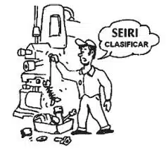
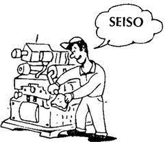
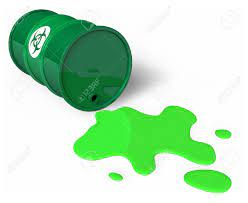
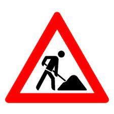
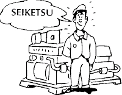
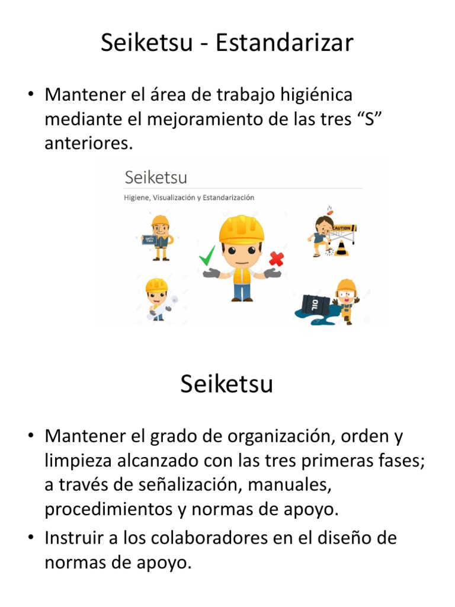

5S es una herramienta de gestión visual fundamental dentro de Lean Manufacturing, y utilizada habitualmente como punto de partida para introducir la mejora continua en la empresa. Su misión es optimizar el estado del entorno de trabajo, facilitar la labor de los empleados y potenciar su capacidad para la detección de problemas. Con su implementación conseguimos mejorar la productividad del proceso y aumentar la calidad.

Japon |
Seiri |
Seiton |
Seiso |
Seiketsu |
Shitsuke |
Español |
Seleccionar |
Organizar |
Limpiar |
Estandarizar |
Disciplina |
Primera fase: SEIRI (Seleccionar):
* Significa eliminar del área de trabajo todos los elementos innecesarios y que no se requieren para realizar nuestra labor.
* Separar en el sitio de trabajo las cosas que realmente sirven de las que no.
* Mantener lo que necesitamos y eliminar lo excesivo del area de trabajo
* Eliminar información innecesaria y que nos puede conducir a errores de interpretación o de actuación.

"Un lugar para cada cosa y cada cosa en su lugar”
Consiste en organizar los elementos que hemos clasificado como necesarios de modo que se puedan encontrar con facilidad.
1. Disponer de un sitio adecuado para cada elemento utilizado en el trabajo de rutina, para facilitar su acceso y retorno al lugar.
2. Facilita el acceso rápido a elementos que se requieren para el trabajo.
3. Mejorar la información en el sitio de trabajo para evitar errores y acciones de riesgo potencial.
4. El aseo y la limpieza se pueden realizar con mayor facilidad y seguridad.
5. Se libera espacio
6. Disminuir los tiempos de traslado
7. Disminuir tiempo de búsqueda
8. Fortalece el sentido de pertenencia
Colocar las cosas útiles por orden según criterios de:
• Seguridad: Que no se puedan caer, que no se puedan mover, que no estorben.
• Calidad: Que no se oxiden, que no se golpeen, que no se puedan mezclar, que no se deterioren.
• Eficacia: Minimizar el tiempo perdido. Buscar el lugar más funcional
Significa eliminar el polvo y suciedad de todos los elementos de mi lugar de trabajo (escritorio, maquinaria, etc.).
La limpieza implica no únicamente mantener los equipos dentro de una estética agradable permanentemente, implica un pensamiento superior a limpiar. Exige que realicemos un trabajo creativo de identificación de las fuentes de suciedad y contaminación para tomar acciones de raíz para su eliminación, de lo contrario será imposible mantener limpio y en buen estado el área de trabajo.
Para aplicar la LIMPIEZA se debe:
1. Integrar la limpieza como parte del trabajo diario.
2. Asumir la limpieza como una actividad de mantenimiento autónomo.
3. Limpiar para encontrar anomalías.
4. Aumentar la estabilidad del proceso mediante la prevención de detectar y prevenir pequeñas desviaciones de manera oportuna.
5. Eliminar fuentes de contaminación.
6. Mejorar la seguridad mediante la eliminación de improvisaciones.
7. Mejorar la limpieza de área y con esto aumentar el orgullo de los socios por pertenecer a esta área
"Un sitio sucio y desordenado; es un lugar inseguro que puede provocar un accidente y llegar a afectar la calidad del producto"
¿De donde viene? ¿Lo puede eliminar?
¿No puede eliminarla? minimice el esparcimiento
En esta etapa se tiende a conservar lo que se ha logrado, aplicando estándares definitivos a la práctica de las tres primeras “S”. Esta cuarta S esta fuertemente relacionada con la creación de los hábitos para conservar el lugar de trabajo en perfectas condiciones.
Sostenimiento
Mejorar la calidad mediante el control visual, mejora la disciplina operativa, mediante la aplicación de estándares, normas y reglas para cada labor.
Ayudas visuales para hacer visibles los estándares de calidad, seguridad costos etc.
Las ayudas visuales nos deben permitir identificar rápidamente lo que esta fuera y lo que esta dentro de estándares.
Las ayudas visuales deben ser apropiados para evitar contaminaciones y deterioro de la misma.
Significa convertir en hábito el empleo y utilización de los métodos establecidos y estandarizados para mantener la seguridad, calidad y eficiencia en el lugar de trabajo.
1. Aquí los socios adquieren un autocontrol que permite mantener los logros obtenidos.
2. Se mantiene vigente en todo momento los estandares de las cuatro primeras eses.
3. Continuamos desarrollando el orgullo de los socios por pertenecer al área.
4. Se logra la participación de todos los integrantes del área.
5. Se logra la participación de los supervisores de manera que proveen todo lo necesario para sus actividades